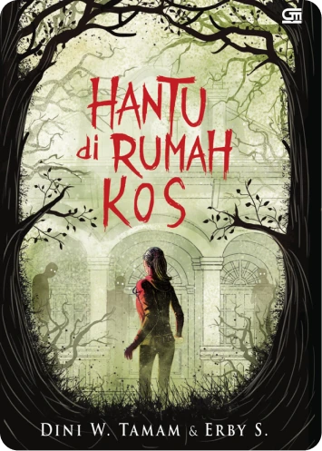

The Tokyo Zodiac Murders
Soji Shimada
Tersedia

KATALOG
Cari buku cetak dan e-book, lalu reservasi atau baca langsung secara online.
koleksi buku di rak
koleksi e-book
pengunjung setiap tahun
33 hasil ditemukan
Soji Shimada

Holly Jackson

Uketsu

Seishi Yokomizo

Seishi Yokomizo

Dini W. Tamam & Erby S.

Abdul Rasyid B Damanik
Faroq Zamzami

Tere Liye
Tidak ada koleksi yang sesuai dengan filter atau pencarian.